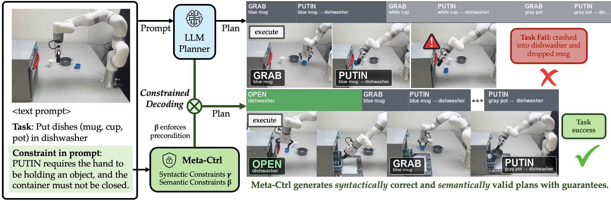
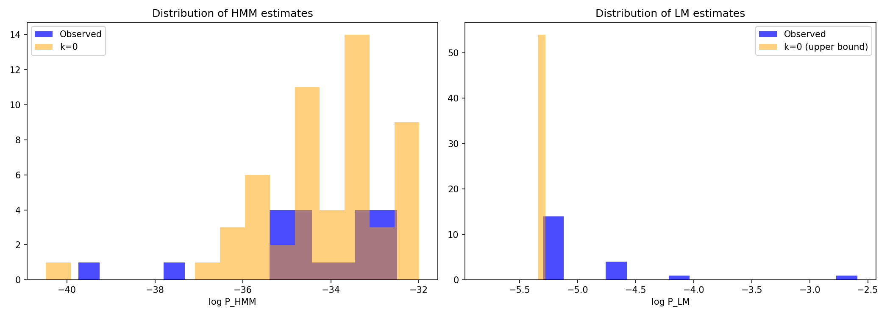
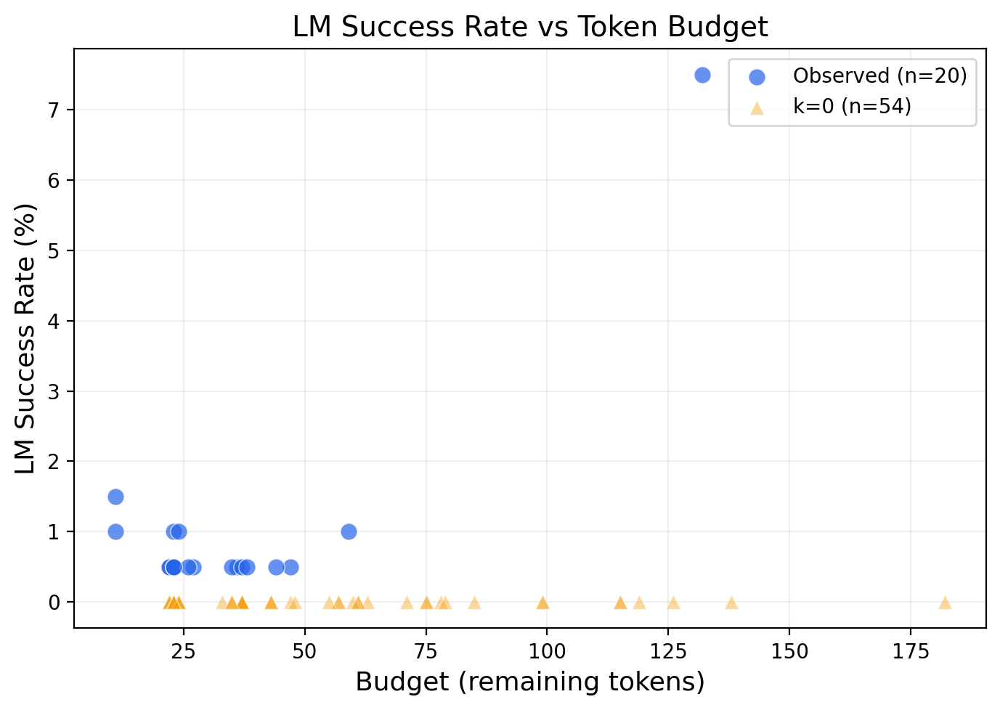
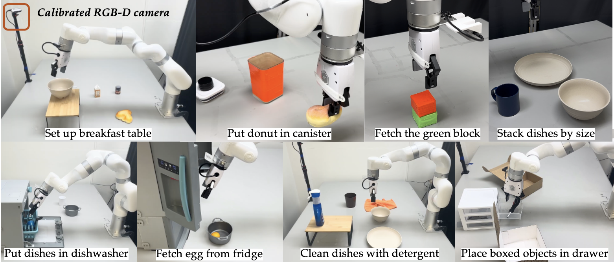

Guaranteed Plan Generation by Decoupling
Syntactic and Semantic Constraints
Affiliation

LLMs generate fluent plans for robots but routinely violate the syntactic and semantic constraints they must satisfy to execute, and existing remedies trade formal guarantees against plan quality: soft methods (affordance scoring, grounded decoding) give no guarantee, while symbolic planners (LLM+P) discard the LM's commonsense. We propose Meta-Ctrl, a constrained-decoding framework that guarantees the encoded constraints while preserving the base LM's plan quality. Meta-Ctrl introduces meta-tokens—a compact vocabulary of grounded actions—enforcing syntax at the token level and semantics (preconditions, goals, ordering) at the action level, an exact factorization that cuts the memory of constrained decoding from over 107 TB to under 2 GB. With it, a small open-weight LM becomes competitive where it otherwise sits at the bottom of the leaderboard: on WAH-NL under the LoTa-Bench protocol it reaches the highest reported subgoal success rate, exceeding GPT-4's, with strong results across the Embodied Agent Interface (VirtualHome and BEHAVIOR). We further demonstrate it on a real tabletop robot, where every generated plan satisfies its preconditions and goals by construction.
An exact factorization that makes guaranteed semantic constraints tractable.
Two-level factorization replaces a multiplicative state space (107 TB) with an additive one (<2 GB), and runs ~1,900× faster.
Every output satisfies the encoded syntactic and semantic constraints—no hallucinated actions, no precondition or ordering violations.
On VirtualHome action sequencing an 8B open model surpasses every EAI leaderboard entry, including Llama-3-70B and frontier closed models.
Plans must satisfy two kinds of constraints. Enforcing them jointly in a single token-level automaton blows up to ~350M states. Meta-Ctrl factors the problem across granularities so each level stays tractable—exactly.
Valid action names, argument structure and formatting, enforced at the token level with a DFA. Following Ctrl-G, each token is weighted by a tractable estimate of whether the full completion can still satisfy γ—keeping the hard guarantee while reasoning about the whole remaining sequence, not just the next token.
Preconditions, goal achievement and ordering over the evolving world state, enforced at the action level over meta-tokens — a compact alphabet {ACT, ID0…IDk, EOS} of grounded actions, ~132 symbols instead of a 128K-token vocabulary.

| Quantity | Monolithic | Two-level (ours) |
|---|---|---|
| DFA states | Sγ × Sβ ≈ 350 M | Sγ + Sβ ≈ 57 K |
| Compute | 1,720 T | 922 G |
| DP memory | 107 TB | 1.6 GB |
| Surrogate fit (−log p / action) | 33.54 (token HMM) | 2.01 (action HMM) |
~1,900× faster · ~67,000× less memory · ~16.7× better fit.
Embodied Agent Interface (VirtualHome). An 8B open-weight model with Meta-Ctrl surpasses every leaderboard entry, including models an order of magnitude larger.
| Model | Action Sequencing | Subgoal Decomposition | ||
|---|---|---|---|---|
| Task SR | Exec SR | Task SR | Exec SR | |
| GPT-3.5-turbo | 24.9 | 40.7 | 69.2 | 81.4 |
| GPT-4o | 71.5 | 81.3 | 87.6 | 91.1 |
| o1-preview | 65.2 | 72.5 | 89.4 | 93.2 |
| Claude-3.5 Sonnet | 76.1 | 81.3 | 89.1 | 92.0 |
| Gemini 1.5 Pro | 76.7 | 83.6 | 87.0 | 91.1 |
| Mistral Large | 78.4 | 84.6 | 84.3 | 92.0 |
| Llama 3 70B Instruct | 59.0 | 66.6 | 78.4 | 87.3 |
| Ctrl-G — Llama 3 8B Instruct base | ||||
| Llama 3 8B Instruct | 21.3 | 23.6 | 48.8 | 58.0 |
| + Syntax Ctrl-G (γ) | 48.7 | 51.5 | 60.1 | 79.0 |
| + Semantic Meta-Ctrl (γ+β) | 85.3 | 91.8 | 79.8 | 82.5 |
Adding token-level syntax (γ) more than doubles the base model; adding action-level semantics (β) via meta-tokens lifts action-sequencing task success to 85.3%, above every closed and open baseline on the leaderboard.
| Method | Base LM | SR | SSR | Exec |
|---|---|---|---|---|
| STEP (prior SOTA) | larger | 0.400 | 0.620 | – |
| LoTa-Bench | LLaMA-1-65B | – | 0.433 | – |
| LoTa-Bench | GPT-4 | – | 0.342 | – |
| ProgPrompt | – | 0.030 | 0.187 | – |
| SayCan | – | 0.010 | 0.021 | – |
| Same LM (Llama-3.1-8B) + same evaluator + same n=100 | ||||
| Raw LLM (unconstrained) | Llama-3.1-8B | 0.000 | 0.022 | 0.010 |
| Likelihood-pick (LoTa-Bench) | Llama-3.1-8B | 0.010 | 0.213 | 1.000 |
| Meta-Ctrl (ours) | Llama-3.1-8B | 0.470 | 0.705 | 1.000 |
On WAH-NL, Meta-Ctrl reaches the highest reported subgoal success rate (0.705), exceeding GPT-4 under the same protocol, with every plan executable by construction.

Eight tabletop tasks on a real XArm7 with a calibrated RGB-D camera. Every generated plan satisfies its preconditions and goals by construction.

A grid search over the semantic guidance weight (γ factor) trades off task success against executability and error modes on EAI VirtualHome action sequencing.
| Config | Task SR | Exec SR | Missing step | Added step | Wrong order | Total goal |
|---|---|---|---|---|---|---|
| Baseline | 20.66 | 22.0 | 38.36 | 0.66 | 0.98 | 23.10 |
| DFA-only | 38.36 | 39.7 | 58.36 | 17.38 | 1.64 | 48.18 |
| g = 0.03 | 36.07 | 45.2 | 53.44 | 4.92 | 1.31 | 47.52 |
| g = 0.05 | 36.72 | 49.8 | 49.51 | 3.61 | 0.66 | 48.02 |
| g = 0.06 | 37.05 | 51.5 | 47.54 | 2.95 | 0.98 | 48.68 |
| g = 0.10 | 21.97 | 56.1 | 42.95 | 1.97 | 0.98 | 36.80 |
DFA-only masking maximizes raw task success but inflates added/redundant steps; adding probabilistic semantic lookahead steadily raises executability and reduces missing-step and redundant-action errors, with an intermediate weight giving the best overall goal score.